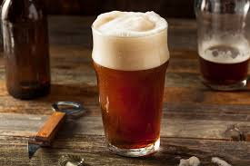
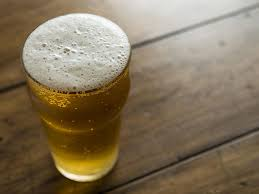
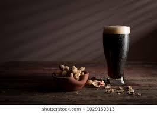
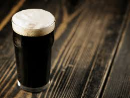
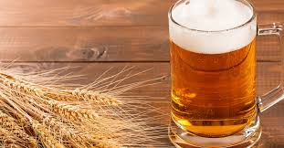
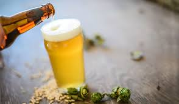

Ale is a general category of beer: You'll find sub-categories like brown ales or pale ales. This is the
oldest style of beer, which dates back to antiquity.

Lagers are a newer style of beer with two key differences from ales. Lagers ferment for a long time at
a low temperature, and they rely on bottom-fermenting yeasts.

A type of ale, porter beers are known for their dark black color and roasted malt aroma and notes.
Porters may be fruity or dry in flavor, which is determined by the variety of roasted malt used in the
brewing process.

Like porters, stouts are dark, roasted ales. Stouts taste less sweet than porters and often feature a
bitter coffee taste, which comes from unmalted roasted barley that is added to the wort.

An easy-drinking, light style of beer, wheat beers are known for a soft, smooth flavor and a hazy body.
Wheat beers tend to taste like spices or citrus, with unfiltered wheat beer.

Pilsners are among the hoppiest lagers and generally have a dry, slightly bitter flavor. Their
light golden color, clear body, and crisp finish make Pilsners a popular summer beer.